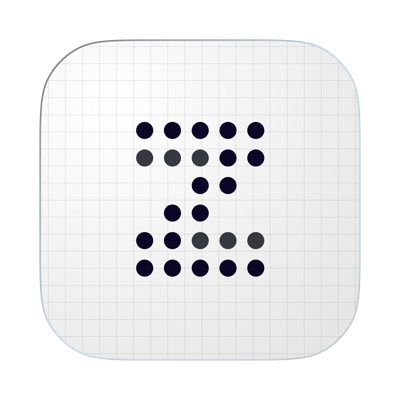

Werkbank
Eine Seitenleiste statt Tabs, mit App-Wechsler für die Suite, den fünf Stufen der Pipeline, Ordnern und dem zuletzt Geöffneten. Rechts ein Inspector statt Toolbar-Pills. Unter dem Papier eine ausklappbare Zeitleiste, die zeigt, wer wann redet und wo der Zielbereich liegt. Ruhiges Graphit, weißes Papier und eine einzige Akzentfarbe: Textmarker-Gelb.
Nix früher Feierabend. Nur weil du mit deinen Aufgaben fertig bist, heißt das …
Längste Zeile im Skript · Klick springt hinLogo
Das bestehende Icon - ein Z aus Punkten auf Karopapier - bleibt die Marke.
Es lag im Repo nur als PNG vor; die Punkt-Matrix (6 × 5, zwei Tonwerte)
ist hier exakt als SVG nachgebaut und in die neuen Farben gesetzt.
Die helle Fassung ist seit Oktober 2026 das App-Icon
(packages/design/assets/).

Bausteine
Alles, was in den Screens vorkommt, stammt aus diesem kleinen Satz an
Komponenten - einmal hell, einmal dunkel, mit denselben Klassen. Das ist
der Inhalt von packages/design in seiner ersten Version.
Semantische Tokens
Komponenten lesen nur diese Namen. Eine andere App der Suite tauscht --accent (und ggf. --side-bg), sonst nichts.
| Token | Rolle | Hell | Dunkel |
|---|---|---|---|
--side-bg | Seitenleiste | #1B1E24 | #0F1114 |
--bg | Fläche hinter Papier und Listen | #F3F4F6 | #16181D |
--surface | Karten, Inspector, Menüs | #FFFFFF | #1C1F25 |
--fill | Hover, Spuren, Schalter aus | #ECEEF1 | #272B32 |
--fg / --muted / --faint | Text in drei Stufen | ||
--line / --line-soft | Trennlinien | ||
--paper / --paper-fg | Schreibfläche (endlos) | ||
--accent | Aktiv, Neu, Hook, Gutter-Label | #FFE14D | #FFE14D |
--warn | Nur: Obergrenze des Zielbereichs überschritten | #D2452F | #FF7A66 |
--t-<name> | Charakter-Tint, 28 % auf Papier gemischt |
Feinschliff
Die kleinen Entscheidungen, die in den Screens stecken.
Highlighting wie heute
Volle Zeilen-Pills, Farbe zu 28 % deckend aufs Papier gemischt - identisch zu highlight.ts und zum PDF. Im Dark-Mode gegen das dunkle Papier gemischt statt halbtransparent, damit nichts grau wird.
Stufen-Symbole statt Farben
Ein Ring, der sich in Vierteln füllt. Die Form sagt die Reihenfolge, ohne fünf neue Farben einzuführen. „Online" ist das einzige gelbe Symbol mit Haken.
Zeitleiste: eingeklappt nie leer
Eingeklappt bleibt eine 10 px hohe Spur mit Hook, Zielbereich, Obergrenze und Abspielkopf sichtbar. Man sieht beim Schreiben, ob es zu lang wird, ohne etwas zu öffnen. ⌘J klappt auf.
Zeitleiste und Papier sind verbunden
Hover auf einen Abschnitt umrandet die Zeile im Papier, der Tooltip zeigt Text und Dauer. Klick springt hin. Der Abspielkopf folgt dem Cursor.
Zielbereich statt Punktlandung
Ein Ordner hat einen Bereich („Büro-Sketche: 0:45-1:05"), mit globalem Standard. 1:02 ist damit kein Fehler. Rotstift erscheint nur über der Obergrenze - in Liste, Inspector, Zeitleiste und Fokus-Pille gleich. Unter dem Bereich gibt es nur einen leisen Hinweis, nie Rot. Als eigenes Feature festgehalten in docs/feature-laengenziel.md.
Block-Typ am Cursor
Statt sieben Pills oben steht der Typ des aktuellen Blocks als gelbes Label links neben der Zeile, mit Hotkey. Nur am Cursor-Block, nie mehrfach.
Autocomplete sagt, wer dran ist
Die Vorhersage aus predict.ts wird sichtbar: „AXEL ist dran" steht oben, ⏎ übernimmt. Neue Namen tippt man einfach weiter.
Inspector zeigt nur Informationen
Stufe, Länge, Cast, Idee, Versionen - nichts davon ist eine Einstellung. Quick-Modus und Farben im Text sind zwei Umschalter in der Kopfleiste, der Tooltip erklärt den Zustand. Die Stufe ändert man über den Chip daneben.
Vier Blocktypen
Action, Charakter, Dialog, Parenthetical - mehr braucht ein TikTok- oder YouTube-Skript nicht. Kamera, Caption und SFX entfallen; Regie steht als Action, Hinweise fürs Sprechen tippst du mit „(" direkt im Dialog als Parenthetical (Entscheidung 2026-10-03).
Endlose Schreibfläche
Keine Seiten, keine Seitenzahlen - wie heute ein durchgehendes Blatt. Seiten gibt es erst im PDF.
Stufe per Menü oder Tastatur
Im Menü wählen die Ziffern 1-5 direkt. ⌘⌥→ schiebt ohne Menü eine Stufe weiter, der Toast bietet Rückgängig an.
Idee erbt den Kontext
⌘I übernimmt den Ordner des offenen Skripts und funktioniert auch im Fokus-Modus. Das Fenster dahinter bleibt, wie es war.
Aktive Navigation
Aktiver Eintrag: hellere Fläche plus 3 px Textmarker-Kante am Rand. Ordner und Zuletzt sind eine Stufe leiser als die Pipeline.
Zeilen zeigen beim Hover Aktionen
Öffnen und „⋯" ersetzen beim Hover das Datum, die Laufzeit bleibt stehen. Darunter steht der Logline-Satz, damit Titel kurz bleiben dürfen.
Liste klappt, was erledigt ist
Gedreht und Online sind standardmäßig eingeklappt. Ideen stehen nicht in der Skript-Liste, nur ein Hinweis „48 Ideen warten" führt zur Ideen-Seite. Oben bleibt, was Arbeit braucht.
Ideen: eigene Seite für 50+
Dichte Liste mit 36 px Zeilen, nach Zeit gruppiert, Ordner als Filter-Chips. Rechts das Detail der gewählten Idee zum direkten Weiterschreiben, plus „Ähnliche Stücke" aus der Volltextsuche, damit keine Idee doppelt entsteht. Alles per Tastatur, ⇧-Klick wählt mehrere zum Verschieben oder Senden an Studio.
Export zeigt das Ergebnis
Links die echte erste PDF-Seite mit Farben, rechts drei Formate als Karten und nur die Optionen, die zum gewählten Format passen. Seiten tauchen erst hier auf.
Einstellungen als Liste mit Erklärung
Jede Zeile sagt in einem Satz, was sie bewirkt. Neu: Sprechtempo und Zielbereich - global und je Ordner -, Schreib-Zähler abschaltbar. Updates bekommen ein Badge, wenn etwas bereit ist.
Onboarding zeigt statt erklärt
Drei Schritte (Aussehen, Schreiben, Los geht's). Im mittleren steht ein Mini-Skript, in dem Enter sichtbar durch die Blöcke führt und der Quick-Modus den zweiten Sprecher von selbst einsetzt.
Zähler statt Ziel
Kein Wochenziel, kein Streak. Unten in der Leiste steht, was geschrieben wurde - im kleinsten Zeitraum, in dem etwas passiert ist: diese Woche, sonst diesen Monat, sonst dieses Jahr. So steht dort nie eine 0, außer man ist ganz neu. Hover zeigt alle Zeiträume.
Tastatur
Ohne Tabs ändern sich ein paar Kürzel. Alles Bisherige im Editor bleibt.
| Kürzel | Aktion | vorher |
|---|---|---|
⌘K | Suchen & Befehle - leer zeigt zuerst „Zuletzt" | nur Skript-Suche |
⌘I | Idee erfassen, überall (auch Fokus) | im Fokus gesperrt |
⌘[ / ⌘] | Zurück / Vor im Verlauf | ⌘⌥←/→ Tabs |
⌘\ · ⌘⇧\ | Seitenleiste · Inspector ein/aus | neu |
⌘J | Zeitleiste ein/aus | neu |
⌘⌥→ / ⌘⌥← | Stufe vor / zurück | neu |
⌘⇧F | Fokus: Leiste, Inspector und Zeitleiste weg | unverändert |
| Quick-Modus · Farben | Umschalter in der Kopfleiste, ohne Kürzel-Zwang | Toolbar |
⌘1 · ⌘2 · ⌘3 | Action · Charakter · Dialog | ⌘1-7, vier Typen entfallen |
Tab · ⏎ | Block-Picker, Smart-Enter | unverändert |
⌘W · ⌘0-9 | entfallen mit den Tabs | Tab schließen / wählen |
Offen
Unter 1200 px Fensterbreite
Leiste + Inspector brauchen 540 px. Vorschlag: Inspector wird dann zum Overlay von rechts, Leiste bleibt.
Mehrere Skripte nebeneinander
Ohne Tabs kein sichtbares Nebeneinander mehr. „Zuletzt" + ⌘K decken das ab; falls es fehlt, später geteilte Ansicht statt Tabs.
Web-Version
Die Schale ist plattformneutral. Trafficlights entfallen im Web wie heute über data-shell="web"; das Desktop-Only-Gate (< 1024 px) bleibt.
Bestehende Skripte mit alten Blocktypen
Braucht eine Migration: Kamera, Caption und SFX werden zu Action. Parentheticals bleiben, was sie sind. Vorher ein Snapshot pro Skript, damit nichts verloren geht.
Landing und README
Beide werben mit sieben Blocktypen, Wochenziel und Streak. Beim Umsetzen müssen Features-Sektion, Workflow-Demo und Vergleichstabelle mitziehen.
Zeitleiste ist eine Schätzung
Basis ist die bestehende Formel in lib/runtime.ts mit dem WPM aus den Einstellungen. Der Tooltip sollte das einmal ehrlich sagen.